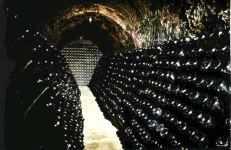

|
Parxet, S.A. Torrente, 38 Tel. +34.(9)3.395-0811 URL:
www.troc.es/parxet |
 |
Denominación de Origen (D.O.): Alella
Descripción de las Bodegas:
Situada en la D.O. Alella, Parxet S.A. es la suma de su moderna Bodega de vinos, ubicada en santa María de Martorelles, y de sus cavas, nacidas en 1920 en Tiana.
Tiana mira al mar y Santa María de Martorelles a los bosques. En la primera aún se respira aquella atmósfera residencial modernista que caracterizó los años veinte. La segunda vive la sobriedad de sus viñas. Dos visiones de Alella que se proyectan en sus vinos.
En Tiana, Mas Parxet exhibe una edificación de masía urbana, la cual parece disimular las cavas que, una sobre otra, recorren todo el subsuelo. Toda una estructura que nace en los felices años de entre guerras de mano de la familia Suñol. En aquellos años veinte el champagne Parxet tuvo una notable cotización en el entorno Barcelonés.
En Santa María de Martorelles se vive el vino dentro de una Bodega de corte californiano Esta se levanta en un lugar silencioso y pintoresco. Los ruidos de las bombas de trasiego y del tren de embotellado parecen amortiguarse para no alterar la tranquilidad de Can Matons, masía del siglo XVIII adosada a la bodega. Su estructura, de ladrillo visto y cristal, conforma un contrapunto con las piedras del Can Matons dieciochesco. Bajo su arquitectura contemporánea, y en contraste con los clásicos conos de madera, se alzan los que fueron de los primeros depósitos de acero inoxidable de Cataluña. Junto a ellos, dos prensas neumáticas acarician la uva.
Abrazando la bodega se extienden los viñedos de Pansa Blanca, Macabeo, Parellada, Chenin Blanc, Chardonnay, éste en espaldera. Su presencia enriquece el retrato de esta moderna bodega de los noventa.
Don Juan Peláez Fabra, el actual Marqués de Alella, vivió su niñez en olores de mosto y vino. Su familia ya elaboraba vino de Alella en el siglo XVIII. Su tatarabuelo, Don camilo Fabra y Fontanills, embotellaba y exportaba vino a finales del siglo XIX. El título encabezaba las botellas que consiguieron una medalla de oro a la exportación, en la Exposición de Agricultura de 1981, la cual se conserva en la Bodega.
En los inicios de los ochenta, Juan Peláez conoció a Ismael Manaut, empresario e hijo de esta zona. Ambos aspiraban a impulsar su Denominación de Origen que fue considerada en la mitad de este siglo la más prestigiosa de España. Para ello, Parxet incrementó sus viñas comprando a precio edificable, y resistiendo la tenaza de las urbanizaciones que invadirían estas tierras, estimuló a los agricultores de la zona en el mismo empeño.
Parxet, S.A. recomienda:
|
|
|
|
|
|
|
|
|
Vino Blanco. Variedad: Pansa Blanca. El Marqués de Alella Clásico ofrece el placer de beber un vino que no termina en seco, como es de rigor tanto en los blancos suntuosos como en los sencillos. Deja ese leve regusto de dulcedumbre de la uva. Son los restos moleculares de azúcares ganados al sol mediterráneo, perfectamente ensamblados con sus once grados de alcohol. El conjunto perfila la silueta de un vino capaz de envejecer en botellas más tiempo que sus hermanos secos. Un Marqués de Alella Clásico puede poseer, con el tiempo, el toque almendrado que otorga una suave evolución en botella, con las notas características de los nobles blancos europeos. |
Cava Brut Nature. Parxet es la aventura del cava. La fidelidad de Parxet a la Pansa Blanca, de analogía con el Xarel·lo, pone carácter de casa e incluso de la zona. |
Vino Blanco. Grado alcohólico: 12% vol. alcohol. |